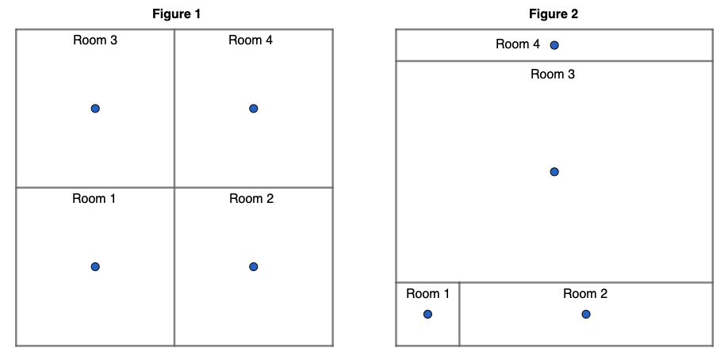

Additional Functionality¶
Nimble functionality designed to support users.¶
Our data in this example will help highlight functionality included in the Nimble library such as logging, randomness, and the design of “custom learners” for making your own machine learning algorithms that are supported by Nimble. Our data contains 2000 points and 8 features. The first 7 features are wifi signal strength values detected by a mobile phone from seven different wifi sources (one feature per source). The final feature identifies which of four rooms the mobile device was in. Our goal will be to predict the room that the phone is in based on wifi signal strength data.
In this example we will learn about:
Getting Started¶
One highlight of this example is Nimble’s logging. Since the log contents can be affected by prior uses of Nimble, we want to ensure that the behavior of this example is consistent for everyone. To achieve this consistency, we will be storing our log in a temporary directory created by Python’s tempfile module. This will ensure that our log queries only return information logged in this example. It also allows us to quickly remove the directory and its contents when we finish.
[2]:
import tempfile
import nimble
from nimble.calculate import fractionCorrect
tempDir = tempfile.TemporaryDirectory('nimble-logs')
Configuration¶
Nimble allows for user configuration of certain aspects of our library through nimble.settings. The default settings are written to a file and loaded each time Nimble is imported. To see the current configuration settings, we can use nimble.settings.get. We can also change the default settings using nimble.settings.setDefault or use nimble.settings.set to make changes for only the current session.
Next, we will be exploring Nimble’s logging feature. We want to start with an empty log file and make sure that our logger behavior is the same. Let’s configure our logging settings so we can ensure that your log entries match ours throughout this example.
[3]:
# a new log file is generated when a new location is set
nimble.settings.set('logger', 'location', tempDir.name)
# enable logging unless explicitly overridden by a local setting
nimble.settings.set('logger', 'enabledByDefault', 'True')
Now that we have our new (temporary) logging file established, we can load our data for this example. The nimble.fetchFile function stores and retrieves data based on a configurable location that defaults to your home directory. Everyone’s fetch location is different so we will not print ours but if you are running this code and would like to see yours, uncomment the line below.
[4]:
# print(nimble.settings.get('fetch', 'location'))
Within that configured directory location, fetchFile creates a “nimbleData” directory to store downloaded data. fetchFile returns the path to the requested data, downloading it if it is not already available locally. Usually, fetchFile requires a url string, but Nimble has a built in shorthand for datasets in the UCI repository that we use to get our dataset for this example.
[5]:
path = nimble.fetchFile('uci::Wireless Indoor Localization')
wifi = nimble.data(path, name='wifiData')
As a reminder, this data used a mobile phone to collect wifi signal strength values from seven different wifi sources in four different rooms. Imagine you live in an apartment with four rooms (kitchen, living room, bedroom, and bathroom) and your phone picks up 7 wifi signals from your neighbors. As you move your phone from room to room, it will be closer to certain wifi sources and farther from others, changing the signal strength. This dataset is a matrix of integers collected from an experiment similar to our hypothetical situation above. Since our data does not contain a header row, it is a good practice to add feature names manually to clarify the contents of each feature.
[6]:
headers = ['source' + str(i) for i in range(7)] + ['room']
wifi.features.setNames(headers)
wifi.show('wifi signal strengths', maxHeight=12)
wifi signal strengths
"wifiData" 2000pt x 8ft
'source0' 'source1' 'source2' 'source3' 'source4' 'source5' 'source6' 'room'
┌─────────────────────────────────────────────────────────────────────────────
0 │ -64 -56 -61 -66 -71 -82 -81 1
1 │ -68 -57 -61 -65 -71 -85 -85 1
2 │ -63 -60 -60 -67 -76 -85 -84 1
│ │ │ │ │ │ │ │ │ │
1997 │ -62 -59 -46 -65 -45 -87 -88 4
1998 │ -62 -58 -52 -61 -41 -90 -85 4
1999 │ -59 -50 -45 -60 -45 -88 -87 4
Logging¶
One helpful feature of Nimble is the ability to log each session. While running a script or during an interactive session, actions and results are stored and can be queried later. This information is a great resource for reviewing sessions without needing to rerun the code. Depending on the settings, the log can also provide many additional details regarding a machine learning algorithm’s performance. As we go through this example, we will demonstrate how the logger is recording our actions. All
logged functions and methods have a useLog parameter. This parameter provides local control of logging, which can override the global settings. A value of True will always add a log entry, False will never add a log entry and None (the default) will use the global “enabledByDefault” setting . Thus far, our previous calls to nimble.data and features.setNames contained useLog parameters. Since we set enabledByDefault to “True”, these two calls were logged.
We can also make our own entries into the log using nimble.log. Let’s add an entry to remind ourselves about the details of our data. Then we can use nimble.showLog to view our current log.
[7]:
description = 'Wifi signal strength data from 7 sources in 4 possible rooms'
nimble.log('Data Description', description)
nimble.showLog()
NIMBLE LOGS
...............................................................................
. SESSION 0 .
...............................................................................
Loaded: wifiData 2022-05-31 19:38:13
# of points 2000
# of features 8
path /home/tpburns/nimbleData/archive.ics.uci.edu/ml/machine-
learning-databases/00422/wifi_localization.txt
logID _NIMBLE_0_
...............................................................................
wifiData.features.setNames 2022-05-31 19:38:13
Arguments: assignments=['source0', 'source1', 'source2', 'source3', 'source4',
'source5', 'source6', 'room']
...............................................................................
User - Data Description 2022-05-31 19:38:13
Wifi signal strength data from 7 sources in 4 possible rooms
...............................................................................
We can always override the global logging configuration by setting useLog to True or False. Setting useLog to True or False has the advantage of ensuring that everything in the code is logged as desired regardless of the global setting. When “enabledByDefault” is set to “False”, using useLog=True is perfect for logging only things we explicitly want to log. We set “enabledByDefault” to “True” earlier, but we still may want to avoid logging certain things. For example,
below we decide to check the mean and median signal strength for each source because large differences would indicate outliers. Remembering that we ran this check is not overly helpful so we can skip logging it, but if we find outliers we will want to log any actions we take.
[8]:
sourceData = wifi[:, 'source0':'source6']
print(sourceData.features.calculate(nimble.calculate.mean, useLog=False))
print(sourceData.features.calculate(nimble.calculate.median, useLog=False))
1pt x 7ft
'source0' 'source1' 'source2' 'source3' 'source4' 'source5' 'source6'
┌──────────────────────────────────────────────────────────────────────
0 │ -52.331 -55.623 -54.964 -53.566 -62.641 -80.985 -81.727
1pt x 7ft
'source0' 'source1' 'source2' 'source3' 'source4' 'source5' 'source6'
┌──────────────────────────────────────────────────────────────────────
0 │ -55.000 -56.000 -55.000 -56.000 -64.000 -82.000 -83.000
It looks like our mean and median values are similar, so our data does not have outliers that we need to worry about. We don’t have to make any modifications to our data, but let’s verify that our calculations were not added to the log.
[9]:
NIMBLE LOGS
...............................................................................
. SESSION 0 .
...............................................................................
Loaded: wifiData 2022-05-31 19:38:13
# of points 2000
# of features 8
path /home/tpburns/nimbleData/archive.ics.uci.edu/ml/machine-
learning-databases/00422/wifi_localization.txt
logID _NIMBLE_0_
...............................................................................
wifiData.features.setNames 2022-05-31 19:38:13
Arguments: assignments=['source0', 'source1', 'source2', 'source3', 'source4',
'source5', 'source6', 'room']
...............................................................................
User - Data Description 2022-05-31 19:38:13
Wifi signal strength data from 7 sources in 4 possible rooms
...............................................................................
Randomness¶
If you revisit our data above, we can see that the points appear to be sorted by room. For our machine learning, we will want to randomize the order. When we call points.permute with no arguments, a random permutation is used to reorder our points. However, Nimble wants each run of a script to produce consistent results, so the random seed is controlled by default. This means that the points in our randomly permuted object shown below are always in the same order every time for everyone
running this script.
[10]:
wifi.points.permute()
wifi.show('randomly permuted', maxHeight=12)
randomly permuted
"wifiData" 2000pt x 8ft
'source0' 'source1' 'source2' 'source3' 'source4' 'source5' 'source6' 'room'
┌─────────────────────────────────────────────────────────────────────────────
0 │ -45 -59 -54 -51 -69 -77 -85 2
1 │ -51 -55 -50 -53 -62 -78 -84 3
2 │ -62 -52 -56 -63 -64 -78 -81 1
│ │ │ │ │ │ │ │ │ │
1997 │ -68 -57 -64 -68 -77 -88 -85 1
1998 │ -61 -62 -64 -65 -73 -81 -90 1
1999 │ -52 -61 -51 -52 -66 -80 -89 3
Nimble uses its nimble.random.setSeed function on import to control the random state, but this function is also publicly available to set a new seed or disable Nimble’s randomness control by setting the seed to None. We can either change the seed for the remainder of the script, or temporarily using the context manager nimble.random.alternateControl. Even when Nimble is already controlling the randomness, sometimes it can be helpful to reseed it manually so that the current random
state is known. This could allow us to do something like recreate the same “random” object in another script. Alternatively, we might want to temporarily use an uncontrolled state of randomness to create an object that is different for each run of this script. Below, we view five random points from our data with and without a set seed. The controlled object will always be a copy of the same 5 points but uncontrolled will copy a random selection of points each time the code is run.
[11]:
nimble.random.setSeed(1)
controlled = wifi.points.copy(number=5, randomize=True)
controlled.show('controlled randomness sample')
with nimble.random.alternateControl(seed=None):
uncontrolled = wifi.points.copy(number=5, randomize=True)
uncontrolled.show('uncontrolled randomness sample')
controlled randomness sample
5pt x 8ft
'source0' 'source1' 'source2' 'source3' 'source4' 'source5' 'source6' 'room'
┌─────────────────────────────────────────────────────────────────────────────
0 │ -61 -56 -64 -61 -72 -83 -86 1
1 │ -49 -57 -52 -51 -60 -89 -83 3
2 │ -51 -58 -56 -48 -61 -79 -82 3
3 │ -60 -58 -56 -65 -68 -79 -86 1
4 │ -55 -56 -48 -60 -55 -84 -84 4
uncontrolled randomness sample
5pt x 8ft
'source0' 'source1' 'source2' 'source3' 'source4' 'source5' 'source6' 'room'
┌─────────────────────────────────────────────────────────────────────────────
0 │ -58 -56 -56 -64 -50 -82 -87 4
1 │ -63 -58 -54 -69 -43 -91 -92 4
2 │ -62 -52 -56 -63 -64 -78 -81 1
3 │ -41 -55 -58 -43 -60 -71 -72 2
4 │ -65 -58 -70 -66 -71 -85 -83 1
The randomness within our alternateControl context manager was not controlled but once we exited the context manager, we returned to the current controlled random state. This means that all of our results will be consistent for the remainder of this example. Nimble’s random module also contains the nimble.random.data function for generating an object filled with random values. We will use this later to test that our custom learner is working as expected.
Custom Learners¶
Now it is time to perform our machine learning. For this example, we will first design our own custom machine learning algorithm for use with Nimble rather than using one of Nimble’s built-in CustomLearners or an algorithm from another package supported by Nimble (like sklearn or keras). One theory is that we could identify the center of each room by calculating the mean signal strengths of all known observations in that room. Once we have identified each room’s center, we can
measure the distance of any unknown observations to the four room centers. The shortest of the four distances could indicate that the phone is closest to the center of that room so that will be the room that we predict.
We will be creating a learner named LeastFeatureMeanDistance that classifies points by measuring the Euclidean distance to the feature means for each label and selecting the label where the distance is minimized. To create our own custom machine learning algorithm for Nimble, we inherit from nimble.CustomLearner. Every CustomLearner must minimally define a learnerType attribute and train and apply methods. Our learnerType is 'classification' because it assigns
label predictions based on a predefined set of labels. The train method uses the trainX and trainY data to learn a relationship that can be applied to other data. For our learner, the train method groups our data based on label and calculates the feature means for data with the same label. It uses a dictionary to store the mean of each feature that we “learn” from our training data so that they can be used for apply. The apply method uses the information learned from
training to make predictions on new (unseen) data. For apply in our learner, we compare the Euclidean distance between a point and each label’s feature means (learned in train) and predict the label with the shortest distance.
[12]:
class LeastFeatureMeanDistance(nimble.CustomLearner):
learnerType = 'classification'
def train(self, trainX, trainY):
"""
Calculate the feature means by label group.
"""
allData = trainY.copy()
allData.features.append(trainX, useLog=False)
self.featureMeans = {}
byLabel = allData.groupByFeature(0, useLog=False)
for label, group in byLabel.items():
means = group.features.statistics('mean')
self.featureMeans[label] = means
def apply(self, testX):
"""
Predict labels based on least distance from known label means.
"""
def leastDistance(point):
least = None
prediction = None
for label, means in self.featureMeans.items():
sumSquaredDiffs = sum((point - means) ** 2)
if least is None or sumSquaredDiffs < least:
least = sumSquaredDiffs
prediction = label
return prediction
return testX.points.calculate(leastDistance)
Before we apply this learner to our data, let’s make sure it is working as expected. The success of our learner depends on the room centers providing an accurate prediction of the actual room. This depends highly on the configuration of the rooms, which is unknown to us. Below we see two figures describing two possible layouts of four rooms. In Figure 1, our algorithm should be very effective because the walls bisect the room centers, but in Figure 2 closeness to a room center is often not a good indication of the correct room.
For testing, let’s generate some random data and label it based on Figure 2. The image below shows the room in Figure 2 on a coordinate plane with each axis ranging from 0 to 100. Since we have defined the actual room locations and centers, we can calculate a good approximation of how accurate our model should be. For our training data, we can use nimble.random.data to pick random (x, y) coordinates representing a location on the grid. By setting elementType='int' we get random integer
values from 1 to 99 (inclusive) which will allow our learner to learn a good approximation of the room centers. For each (x, y) coordinate, we can determine the room label and the room center that is closest to the coordinate. We expect our learner’s predictions to be correct when the room label and the closest coordinate are the same.
[13]:
# Since this is only for testing purposes, we won't log this part.
rTrainX = nimble.random.data(numPoints=2000, numFeatures=2, sparsity=0,
elementType='int', useLog=False)
rTrainX.features.setNames(['x', 'y'], useLog=False)
def roomIdentifier(pt):
"""
Return two-tuple (actual room, room center closest to point).
"""
if pt['y'] >= 90:
actualRoom = 4
elif pt['y'] >= 20:
actualRoom = 3
elif pt['x'] >= 20:
actualRoom = 2
else:
actualRoom = 1
knownCenters = {1: (10, 10), 2: (60, 10), 3: (50, 55), 4: (50, 95)}
distances = {}
for room, (x, y) in knownCenters.items():
distances[room] = ((pt['x'] - x) ** 2 + (pt['y'] - y) ** 2) ** 0.5
# find the key for the minimum value in distances
closestCenter = min(distances, key=distances.get)
return (actualRoom, closestCenter)
rTrainY = rTrainX.points.calculate(roomIdentifier, useLog=False)
# extract 25% of our random data (first 500 points) for testing.
rTestX = rTrainX.points.extract(number=500, useLog=False)
rTestY = rTrainY.points.extract(number=500, useLog=False)
# Expected accuracy is the number of points in the test labels where the
# actual room (index 0) is the same as the closest center room (index 1)
# divided by the total number of test labels.
expAcc = rTestY.points.count(lambda pt: pt[0] == pt[1]) / len(rTestY.points)
print('LeastFeatureMeanDistance test expected accuracy', expAcc)
actAcc = nimble.trainAndTest(LeastFeatureMeanDistance, fractionCorrect,
rTrainX, rTrainY[:, 0], rTestX, rTestY[:, 0],
useLog=False)
print('LeastFeatureMeanDistance test actual accuracy', actAcc)
LeastFeatureMeanDistance test expected accuracy 0.596
LeastFeatureMeanDistance test actual accuracy 0.5920000000000001
Our actual prediction accuracy is very similar to our expected accuracy so we can be confident that our learner is working as expected. The accuracies differ slightly because our learner calculates the room centers from the training data so they won’t perfectly match the known centers. Now, let’s use our LeastFeatureMeanDistance learner to see if we can make accurate predictions using our wifi signal strength data.
[14]:
# randomOrder is False because we used permute earlier to randomize the data
trainX, trainY, testX, testY = wifi.trainAndTestSets(testFraction=0.3,
labels='room',
randomOrder=False)
performance = nimble.trainAndTest(LeastFeatureMeanDistance, fractionCorrect,
trainX, trainY, testX, testY)
print('LeastFeatureMeanDistance accuracy:', performance)
LeastFeatureMeanDistance accuracy: 0.9716666666666667
Our simple custom learner worked quite well, predicting the correct room in the test set over 97% of the time. Given our high level of accuracy, we can assume that the walls bisect our room centers. Our error is about 3% and likely occurs when the distance to the closest center is similar between two or more centers. Let’s see if an algorithm like K-Nearest Neighbors can provide better performance because it can compare each unknown observation to multiple known observations.
Cross Validation Deep Logging¶
Nimble also has a few built-in custom learners, which are registered under the package name ‘nimble’. The KNNClassifier learner performs K-Nearest Neighbors classification. Comparing each point to its nearest neighbors makes this algorithm robust against varying room sizes and shapes, which was a major drawback of our LeastFeatureMeanDistance learner. It also provides multiple points of comparison which could help improve prediction accuracy for points near other rooms. However, we
usually do not know the best value for k (the number of nearest neighbors) so we will cross validate for three different values of k. Logging has another configurable option named “enableDeepLogging”. By default it is set to “False” because logging cross validation can increase the size of the log file much more quickly. However, we can learn a lot of useful information from these cross validation logs so let’s set the value to True for the remainder of this session.
[15]:
nimble.settings.set('logger', 'enableDeepLogging', 'True')
Enabling deep logging for cross-validation, will generate log entries for each fold during our k-fold cross-validation. Below, trainAndTest with k=nimble.Tune([3, 5, 7]) will trigger hyperparameter tuning for our three k values. The Tuning object defines a method for selecting each argument set and how each argument set will be validated. All three k values will be checked with the default “consecutive” method, since we are only tuning a single parameter. The default
validation is already “cross validation” but we will set it to perform 3-fold cross-validation instead of the default 5-fold. Then, trainAndTest will apply the k value that performed the best during validation to the test data.
[16]:
performance = nimble.trainAndTest('nimble.KNNClassifier', fractionCorrect,
trainX, trainY, testX, testY,
k=nimble.Tune([3, 5, 7]),
tuning=nimble.Tuning(folds=3))
With deep logging for cross validation enabled, we just created 11 new log entries. We get 9 cross validation logs (3-fold cross validation for 3 different k values). These entries would not be added to the logger without deep logging being enabled and showLog filters these entries out unless levelOfDetail is set to 3 (the highest level). The 10th entry is a summary of the hyperparameter tuning results and the last entry is the results of our call to trainAndTest. The last two
entries are logged as long as regular logging is enabled and will be displayed if levelOfDetail is 2 (the default) or greater. A levelOfDetail of 1 (the lowest) filters out all but logs for data loading and data reports. Our 9 cross validation log entries look similar so we will only show the last two cross validation entries, the tuning summary entry and our trainAndTest log entry by setting maximumEntries=4.
[17]:
nimble.showLog(levelOfDetail=3, maximumEntries=4)
NIMBLE LOGS
...............................................................................
. SESSION 0 .
...............................................................................
KFold("nimble.KNNClassifier") 2022-05-31 19:38:15
Completed in 0.140 seconds
Data # points # features
trainX 933 7
trainY 933 1
testX 467 7
testY 467 1
Arguments: k=7
Random Seed: 2127877500
Fold: 2/3
Metrics: fractionCorrect=0.9764453961456103
...............................................................................
KFold("nimble.KNNClassifier") 2022-05-31 19:38:15
Completed in 0.138 seconds
Data # points # features
trainX 934 7
trainY 934 1
testX 466 7
testY 466 1
Arguments: k=7
Random Seed: 2127877500
Fold: 3/3
Metrics: fractionCorrect=0.9785407725321889
...............................................................................
"nimble.KNNClassifier" Hyperparameter Tuning 2022-05-31 19:38:15
Tuned using the "consecutive" method (loops=1) and validated using the "cross
validation" method (folds=3). The fractionCorrect function was used to
calculate each result, with max values being optimal.
Result Arguments
0.983 k=3
0.981 k=5
0.981 k=7
...............................................................................
trainAndTest("nimble.KNNClassifier") 2022-05-31 19:38:16
Completed in 1.530 seconds
Data # points # features
wifiData_trainX 1400 7
wifiData_trainY 1400 1
wifiData_testX 600 7
wifiData_testY 600 1
Arguments: k=Tune(values=[3, 5, 7])
Random Seed: 99320166
Best Arguments: {'k': 3}
Metrics: fractionCorrect=0.985
...............................................................................
We can see that k=5 slightly outperformed k=7 on the last fold and outperformed both k=3 and k=7 on average during cross validation. When the learner trained with k=5 was applied to our test data, it correctly identified the room in 98.5% of the test points. This outperformed our own custom learner, so predicting the room based on other similar observations is a more effective strategy than prediction based on feature means.
Viewing existing logs¶
Now that we have completed our machine learning, let’s dive a little deeper into how we can take advantage of the showLog to find certain information about our data. Right now our log is small, but as it grows we will not want to look through the entire log. A log file can quickly contain tons of very different textual information from various sessions on varying days. To make the log easy to query, showLog has parameters to filter the log by sessions, dates, and text. For now, let’s try
a text search for our object’s name, ‘wifiData’, and see all log records containing that word.
[18]:
nimble.showLog(searchForText='wifiData')
NIMBLE LOGS
...............................................................................
. SESSION 0 .
...............................................................................
Loaded: wifiData 2022-05-31 19:38:13
# of points 2000
# of features 8
path /home/tpburns/nimbleData/archive.ics.uci.edu/ml/machine-
learning-databases/00422/wifi_localization.txt
logID _NIMBLE_0_
...............................................................................
wifiData.features.setNames 2022-05-31 19:38:13
Arguments: assignments=['source0', 'source1', 'source2', 'source3', 'source4',
'source5', 'source6', 'room']
...............................................................................
wifiData.points.permute 2022-05-31 19:38:13
...............................................................................
wifiData.points.copy 2022-05-31 19:38:13
Arguments: number=5, randomize=True
Returned: _NIMBLE_1_
...............................................................................
wifiData.points.copy 2022-05-31 19:38:13
Arguments: number=5, randomize=True
Returned: _NIMBLE_2_
...............................................................................
wifiData.trainAndTestSets 2022-05-31 19:38:14
Arguments: testFraction=0.3, labels=room, randomOrder=False
Returned: wifiData_trainX, wifiData_trainY, wifiData_testX, wifiData_testY
...............................................................................
wifiData_testX.points.calculate 2022-05-31 19:38:14
Arguments: function=leastDistance
Returned: _NIMBLE_9_
...............................................................................
trainAndTest("custom.LeastFeatureMeanDistance") 2022-05-31 19:38:14
Completed in 0.376 seconds
Data # points # features
wifiData_trainX 1400 7
wifiData_trainY 1400 1
wifiData_testX 600 7
wifiData_testY 600 1
Random Seed: 506456970
Metrics: fractionCorrect=0.9716666666666667
...............................................................................
trainAndTest("nimble.KNNClassifier") 2022-05-31 19:38:16
Completed in 1.530 seconds
Data # points # features
wifiData_trainX 1400 7
wifiData_trainY 1400 1
wifiData_testX 600 7
wifiData_testY 600 1
Arguments: k=Tune(values=[3, 5, 7])
Random Seed: 99320166
Best Arguments: {'k': 3}
Metrics: fractionCorrect=0.985
...............................................................................
While not required for using Nimble, features such as configuration, logging, randomness and custom learners add a lot of helpful functionality. We expect you’ll find yourself using some or all of it to support your data science work. That wraps it up for this example, so now is a good time to clean up the temporary directory containing our log file.
[19]:
tempDir.cleanup()
References:
Rajen Bhatt, ‘Fuzzy-Rough Approaches for Pattern Classification: Hybrid measures, Mathematical analysis, Feature selection algorithms, Decision tree algorithms, Neural learning, and Applications’, Amazon Books
Jayant G Rohra, Boominathan Perumal, Swathi Jamjala Narayanan, Priya Thakur, and Rajen B Bhatt, ‘User Localization in an Indoor Environment Using Fuzzy Hybrid of Particle Swarm Optimization & Gravitational Search Algorithm with Neural Networks’, in Proceedings of Sixth International Conference on Soft Computing for Problem Solving, 2017, pp. 286-295.
Dua, D. and Graff, C. (2019). UCI Machine Learning Repository [http://archive.ics.uci.edu/ml]. Irvine, CA: University of California, School of Information and Computer Science.
Link to dataset: https://archive.ics.uci.edu/ml/datasets/Wireless+Indoor+Localization